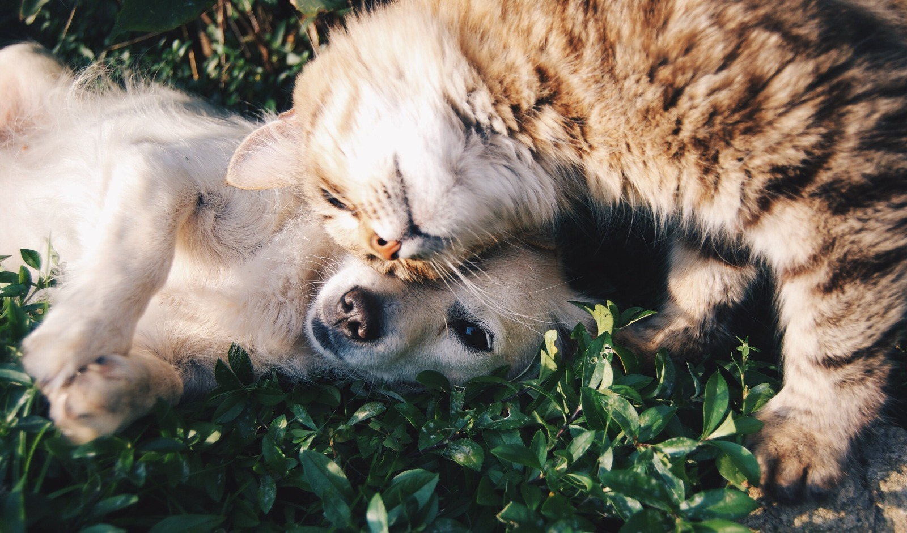

Welcome to WikiUs
Welcome to WikiUs. This website is to teach you about the biography of the creators who made this site, Named Aadisa

About Aadisa
Deswara Syah Izzan Respati
This is Aadisa Rui Xu, she was born in 23rd of November 2008. She is a student in GIS, located in Serang. She is a studnet practicing web designing.
See Profile
Aadisa's socials